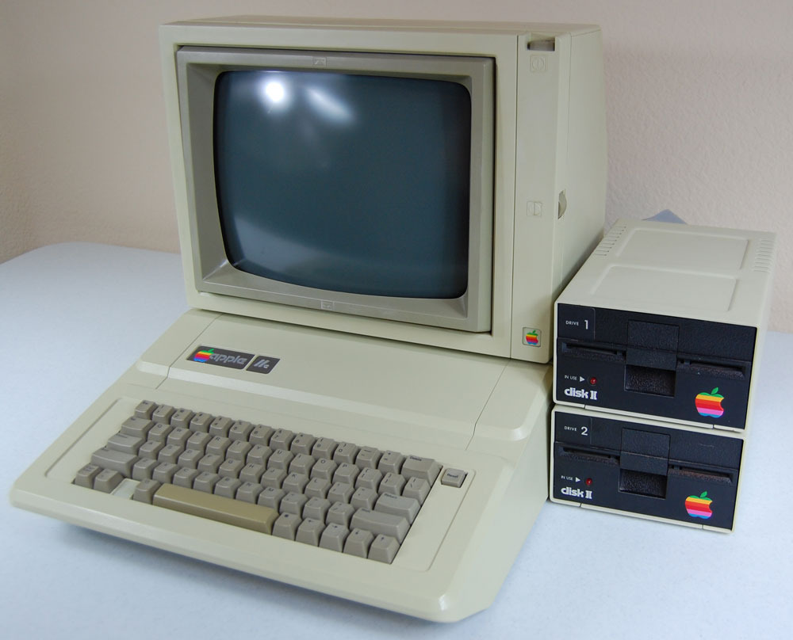

The Code and I: Journey into Programming
Wade Jessee
 When my father bright home the Apple //e, I was still in elementary school and had no idea what a computer was. I couldn't understand why he was so excited about a typewriter. Once he plugged in a game disk and started it up, I was mesmerized. This was so much better than my Atari 2600, and you could make your own games on it! My father got us a subscription to a magazine that included code for games, and I learned everything about BASIC that I could typing in the code.
 My middle school had just started a computer class, so I enrolled as soon as I was able. Unfortunately, I was disappointed to find out that the entire class was going over concepts that I had taught myself. I was lucky that my teacher noticed I was turning in my assignments almost as soon as he gave them. He started giving me new concepts to work on, such as manipulating individual memory addresses. Also over these years I was in middle school, my parents were sending me to summer classes for computers. I went through a course on Logo, which gave me background in a different language (and created my disdain for turtle graphics).
My middle school had just started a computer class, so I enrolled as soon as I was able. Unfortunately, I was disappointed to find out that the entire class was going over concepts that I had taught myself. I was lucky that my teacher noticed I was turning in my assignments almost as soon as he gave them. He started giving me new concepts to work on, such as manipulating individual memory addresses. Also over these years I was in middle school, my parents were sending me to summer classes for computers. I went through a course on Logo, which gave me background in a different language (and created my disdain for turtle graphics).
High school saw me in marching band, and I no longer had time in my schedule for computer classes. I tried to keep up with my skills, but I always seemed to be working on something for band or another class. Also, I was able to take many more science courses, which kept me busy. Some time during my high school years, my interest in programming waned. On the strength of my performance in my science classes, I decided to pursue an education (and career) there.
My time with chemistry drew to a close quickly; I didn't have the right mindset or skills to succeed except at the most basic level. Unsure of what I could be doing, I took some time off from college to figure out where I wanted to go. After a year, I had no real idea, and I already had a job that paid my bills. I quickly realized I could no longer afford to go to college on what I was making. Since I was working, I just stuck with it and left my coding days behind me. I would occasionally pick up a book on a programming language or another, but I never thought I would go into coding as a career…
Until I discovered LaunchCode.